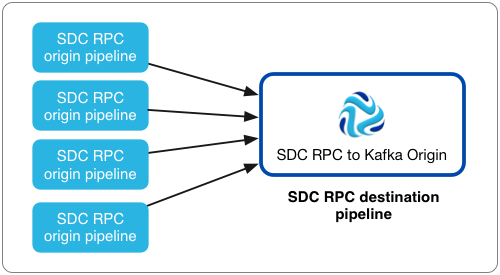

SDC RPC to Kafka
The SDC RPC to Kafka origin reads data from one or more SDC RPC destinations and writes it immediately to Kafka. Use the SDC RPC to Kafka origin in an SDC RPC destination pipeline.
Use the SDC RPC to Kafka origin when you have multiple SDC RPC origin pipelines with data that you want to write to Kafka without additional processing.
Like the SDC RPC origin, the SDC RPC to Kafka origin reads data from an SDC RPC destination in another pipeline. However, the SDC RPC to Kafka origin is optimized to write data from multiple pipelines directly to Kafka. When you use this origin, you cannot perform additional processing before writing to Kafka.
Here is an example of the recommended architecture for using the SDC RPC to Kafka origin:

When you configure the SDC RPC to Kafka origin, you define the port that the origin listens to for data, the SDC RPC ID, the maximum number of concurrent requests, and maximum batch request size. You can also configure SSL/TLS properties, including default transport protocols and cipher suites.
You also need to configure connection information for Kafka, including the broker URI, topic to write to, and maximum message size. You can add Kafka configuration properties and enable Kafka security as needed.
Pipeline Configuration
When you use an SDC RPC to Kafka origin in a pipeline, connect the origin to a Trash destination.
The SDC RPC to Kafka origin writes records directly to Kafka. The origin does not pass records to its output port, so you cannot perform additional processing or write the data to other destination systems.
However, since a pipeline requires a destination, you should connect the origin to the Trash destination to satisfy pipeline validation requirements.
A pipeline with the SDC RPC to Kafka origin should look like this:

Concurrent Requests
You can specify the maximum number of requests the SDC RPC to Kafka origin handles at one time.
An SDC RPC destination in an origin pipeline sends a request to the SDC RPC to Kafka origin when it wants to pass a batch of data to the origin. If you have one origin pipeline passing data to the SDC RPC to Kafka origin, you can set the maximum number of concurrent requests to 1 because the destination processes one batch of data at a time.
Typically, you would have more than one pipeline passing data to this origin. In this case, you should assess the number of origin pipelines, the expected output of the pipelines, and the resources of the Data Collector machine, and then tune the property as needed to improve pipeline performance.
For example, if you have 100 origin pipelines passing data to the SDC RPC to Kafka origin, but the pipelines produce data slowly, you can set the maximum to 20 to prevent these pipelines from using too much of the Data Collector resources during spikes in volume. Or, if the Data Collector has no resource issues and you want it to process data as quickly as possible, you can set the maximum to 90 or 100. Note that the SDC RPC destination also has advanced properties for retry and back off periods that can be used help tune performance.
Batch Request Size, Kafka Message Size, and Kafka Configuration
Configure the SDC RPC to Kafka maximum batch request size and Kafka message size properties in relationship to each other and to the maximum message size configured in Kafka.
The Max Batch Request Size (MB) property determines the maximum size of the batch of data that the origin accepts from each SDC RPC destination. Upon receiving a batch of data, the origin immediately writes the data to Kafka.
To promote peak performance, the origin writes as many records as possible into a single Kafka message. The Kafka Max Message Size (KB) property determines the maximum size of the message that it creates.
For example, say the origin uses the default 100 MB for the maximum batch request size and the default 900 KB for the maximum message size, and Kafka uses the 1 MB default for message.max.bytes.
When the origin requests a batch of data, it receives up to 100 MB of data at a time. When the origin writes to Kafka it groups records into as few messages as possible, including up to 900 KB of records in each message. Since the message size is less than the Kafka 1 MB requirement, the origin successfully writes all messages to Kafka.
If a record is larger than the 900 KB maximum message size, the origin generates an error and does not write the record - or the batch that includes the record - to Kafka. The SDC RPC destination that provided the batch with the oversized record processes the batch based on stage error record handling.
Additional Kafka Properties
You can add custom Kafka configuration properties to the SDC RPC to Kafka origin.
When you add a Kafka configuration property, enter the exact property name and the value. The stage does not validate the property names or values.
Several properties are defined by default, you can edit or remove the properties as necessary.
- key.serializer.class
- metadata.broker.list
- partitioner.class
- producer.type
- serializer.class
Enabling Kafka Security
When using Kafka version 0.9.0.0 or later, you can configure the SDC RPC to Kafka origin to connect securely through SSL/TLS, Kerberos, or both.
Earlier versions of Kafka do not support security.
Enabling SSL/TLS
Perform the following steps to enable the SDC RPC to Kafka origin to use SSL/TLS to connect to Kafka version 0.9.0.0 or later.
- To use SSL/TLS to connect, first make sure Kafka is configured for SSL/TLS as described in the Kafka documentation.
- On the General tab of the stage, set the Stage Library property to Apache Kafka 0.9.0.0 or a later version.
- On the Connection tab, add the security.protocol Kafka configuration property and set it to SSL.
- Then, add the following SSL Kafka configuration
properties:
- ssl.truststore.location
- ssl.truststore.password
When the Kafka broker requires client authentication - when the ssl.client.auth broker property is set to "required" - add and configure the following properties:- ssl.keystore.location
- ssl.keystore.password
- ssl.key.password
Some brokers might require adding the following properties as well:- ssl.enabled.protocols
- ssl.truststore.type
- ssl.keystore.type
For details about these properties, see the Kafka documentation.
For example, the following properties allow the stage to use SSL/TLS to connect to Kafka 0.0.9.0 with client authentication:

Enabling Kerberos (SASL)
When you use Kerberos authentication, Data Collector uses the Kerberos principal and keytab to connect to Kafka version 0.9.0.0 or later. Perform the following steps to enable the SDC RPC to Kafka origin to use Kerberos to connect to Kafka.
- To use Kerberos, first make sure Kafka is configured for Kerberos as described in the Kafka documentation.
- In the Data
Collector
configuration file, $SDC_CONF/sdc.properties, make sure the
following Kerberos properties are configured:
- kerberos.client.enabled
- kerberos.client.principal
- kerberos.client.keytab
- On the General tab of the stage, set the Stage Library property to Apache Kafka 0.9.0.0 or a later version.
- On the Connection tab, add the security.protocol Kafka configuration property, and set it to SASL_PLAINTEXT.
- Then, add the sasl.kerberos.service.name configuration property, and set it to the Kerberos principal name that Kafka runs as.
For example, the following Kafka properties enable connecting to Kafka 0.0.9.0 with Kerberos:

Enabling SSL/TLS and Kerberos
You can enable the SDC RPC to Kafka origin to use SSL/TLS and Kerberos to connect to Kafka version 0.9.0.0 or later.
- Make sure Kafka is configured to use SSL/TLS and Kerberos (SASL) as described in the following Kafka documentation:
- In the Data
Collector
configuration file, $SDC_CONF/sdc.properties, make sure the
following Kerberos properties are configured:
- kerberos.client.enabled
- kerberos.client.principal
- kerberos.client.keytab
- On the General tab of the stage, set the Stage Library property to Apache Kafka 0.9.0.0 or a later version.
- On the Connection tab, add the security.protocol property and set it to SASL_SSL.
- Then, add the sasl.kerberos.service.name configuration property, and set it to the Kerberos principal name that Kafka runs as.
- Then, add the following SSL Kafka configuration
properties:
- ssl.truststore.location
- ssl.truststore.password
When the Kafka broker requires client authentication - when the ssl.client.auth broker property is set to "required" - add and configure the following properties:- ssl.keystore.location
- ssl.keystore.password
- ssl.key.password
Some brokers might require adding the following properties as well:- ssl.enabled.protocols
- ssl.truststore.type
- ssl.keystore.type
For details about these properties, see the Kafka documentation.
Configuring an SDC RPC to Kafka Origin
Configure an SDC RPC to Kafka origin to write data from multiple SDC RPC destinations directly to Kafka.
-
In the Properties panel, on the General tab, configure the
following properties:
General Property Description Name Stage name. Description Optional description. Stage Library Library version that you want to use. On Record Error 
Error record handling for the stage: - Discard - Discards the record.
- Send to Error - Sends the record to the pipeline for error handling.
- Stop Pipeline - Stops the pipeline. Not valid for cluster pipelines.
-
On the Kafka tab, configure the following
properties:
Kafka Property Description Broker URI Connection string for the Kafka broker. Use the following format: <host>:<port>. To ensure a connection, enter a comma-separated list of additional broker URIs.
Topic Kafka topic to read. Max Message Size (KB) 
Maximum size of the message to write to Kafka. Warning: Must be smaller than the maximum message size configured in Kafka.Default is 900 KB.
Kafka Configuration
Additional Kafka configuration properties to use. Using simple or bulk edit mode, click the Add icon to add properties. Define the Kafka property name and value.
Use the property names and values as expected by Kafka.
For information about enabling secure connections to Kafka, see Enabling Kafka Security.
-
On the RPC tab, configure the following properties:
SDC RPC Property Description RPC Listening Port Port number to listen to for data. Must match one of the port numbers associated with the SDC RPC destination that provides the data. Max Concurrent Requests Maximum number of concurrent requests allowed at one time. RPC ID User-defined ID. Must match the RPC ID defined in the SDC RPC destination. Max Batch Request Size (MB) Maximum amount of data to be requested and processed at one time. Default is 100 MB.
-
To use SSL/TLS, click the TLS tab and configure the
following properties:
TLS Property Description Use TLS Enables the use of TLS.
Keystore File The path to the keystore file. Enter an absolute path to the file or a path relative to the Data Collector resources directory: $SDC_RESOURCES. For more information about environment variables, see Data Collector Environment Configuration.
By default, no keystore is used.
Keystore Type Type of keystore to use. Use one of the following types: - Java Keystore File (JKS)
- PKCS-12 (p12 file)
Default is Java Keystore File (JKS).
Keystore Password Password to the keystore file. A password is optional, but recommended. Tip: To secure sensitive information such as passwords, you can use runtime resources or credential stores.Keystore Key Algorithm The algorithm used to manage the keystore. Default is SunX509.
Use Default Protocols Determines the transport layer security (TLS) protocol to use. The default protocol is TLSv1.2. To use a different protocol, clear this option. Transport Protocols The TLS protocols to use. To use a protocol other than the default TLSv1.2, click the Add icon and enter the protocol name. You can use simple or bulk edit mode to add protocols. Note: Older protocols are not as secure as TLSv1.2.Use Default Cipher Suites Determines the cipher suite to use when performing the SSL/TLS handshake. Data Collector provides a set of cipher suites that it can use by default. For a full list, see Cipher Suites.
Cipher Suites Cipher suites to use. To use a cipher suite that is not a part of the default set, click the Add icon and enter the name of the cipher suite. You can use simple or bulk edit mode to add cipher suites. Enter the Java Secure Socket Extension (JSSE) name for the additional cipher suites that you want to use.